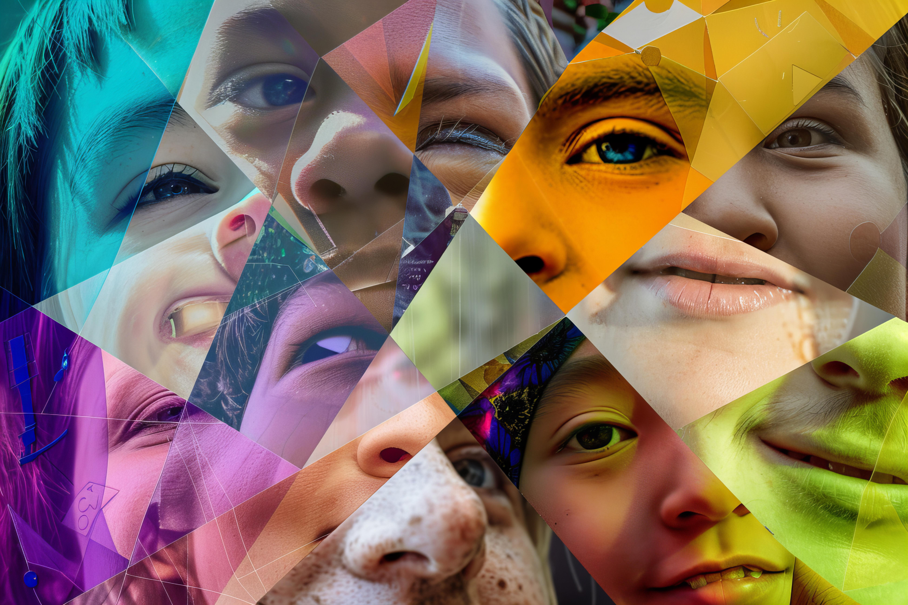

Somos uma empresa formada por quatro integrantes, que teve sua origem a partir de um projeto realizado pelo Senac. Durante o projeto, decidimos criar a FloreSer com o propósito de ajudar pessoas a otimizarem o seu tempo com a criação de sites. Ao longo do desenvolvimento desse projeto, percebemos o grande potencial que a FloreSer possuía e enxergamos a oportunidade de levar nossa proposta além do ambiente acadêmico. Foi então que decidimos transformar esse projeto em um sonho e, posteriormente, em uma realidade.

Oi! Eu sou a Ana, tenho 18 anos e atualmente curso Desenvolvimento de Software Multiplataforma (DSM) na FATEC. Faço parte do time de Front-end da FloreSer e fui responsável por dar o pontapé inicial no desenvolvimento da interface do nosso site e de outros projetos. Gosto de transformar ideias em interfaces bonitas, funcionais e, claro, com a nossa cara!

Olá! Eu sou a Gabrielly, tenho 18 anos e também curso Desenvolvimento de Software Multiplataforma (DSM) na FATEC, junto com a Ana. Faço parte do time de Front-end, trabalhando principalmente com CSS ao lado do Joabe. Juntos, cuidamos da estilização e personalização do site, sempre tentando trazer um pouco de criatividade e descontração para deixar a experiência mais leve e com a personalidade da FloreSer.
Prazer! Me chamo Joabe, tenho 18 anos e atualmente trabalho como Analista Jr. em TI. Faço parte do time de Front-end junto com a Ana e a Gabrielly. Na FloreSer, contribuo principalmente com a parte de estilização e personalização das nossas interfaces. Junto com a Gabrielly, trabalhei na customização do site utilizando CSS, buscando deixar tudo mais agradável, moderno e com a identidade da FloreSer.
Prazer! Eu sou o Luan Mendes Nascimento, tenho 18 anos e atualmente curso Desenvolvimento de Software Multiplataforma (DSM) na FATEC, onde estou no segundo semestre. Na FloreSer, faço parte do time de Back-end, sendo responsável por toda a lógica que acontece por trás do nosso site e dos nossos projetos. Utilizo JavaScript para transformar nossas ideias em funcionalidades e também fui responsável pelo desenvolvimento da lógica dos nossos demais projetos. Gosto de estar por trás dos “bastidores” e fazer tudo funcionar.
Missão
A missão da FloreSer é atuar nos bastidores para transformar ideias em sites funcionais, modernos e personalizados, atendendo desde pequenas até grandes empresas. Buscamos otimizar o tempo dos nossos clientes e, ao mesmo tempo, valorizar suas opiniões e necessidades em cada etapa do desenvolvimento. Dessa forma, trabalhamos em conjunto para que o resultado final não seja apenas um site, mas uma solução que realmente represente a visão e os objetivos de cada cliente.

Visão
Temos como objetivo tornar a FloreSer uma empresa de grande porte e referência no desenvolvimento e terceirização de sistemas e sites para empresas de diferentes segmentos e tamanhos. Queremos crescer de forma constante, ampliando nossa atuação e oferecendo soluções digitais de qualidade tanto para pequenas empresas quanto para grandes organizações, sempre buscando inovação, criatividade e excelência em nossos projetos.

Valores
Na FloreSer, acreditamos que honestidade, qualidade e comprometimento são essenciais para construir bons projetos e relações de confiança. Buscamos entregar produtos de qualidade, mantendo o foco e a dedicação em cada trabalho. Valorizamos a transparência com nossos clientes, suas ideias e opiniões, para que cada projeto seja desenvolvido com responsabilidade e atenção aos detalhes. Mais do que criar soluções digitais, queremos construir relações duradouras e entregar resultados dos quais nossos clientes possam se orgulhar.
Serviços
Na FloreSer, oferecemos soluções completas para transformar ideias em projetos digitais funcionais, organizados e personalizados. Nossos serviços incluem organização e planejamento de ideias, desenvolvimento Front-end e Back-end, criação de layouts e desenvolvimento de sites completos. Cada projeto é planejado de acordo com as necessidades, objetivos e opiniões de nossos clientes. Do primeiro esboço até o sistema completo, trabalhamos em cada etapa do projeto para transformar a ideia do cliente em uma solução digital de qualidade, funcional e com a sua identidade.